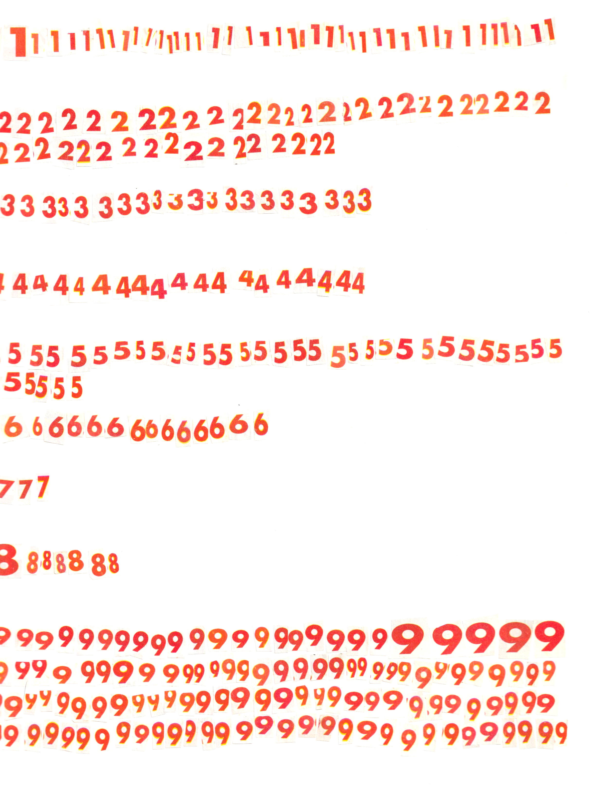

A prolonged intermediate state. Sir Alfred Mehran was stucked in the Charles de Gaulle Airport for 18 years due to lost of government issued documents.

I am interested in the relationship between the individuals and the collective. And the principles beyond indiviual experiences
The environment is a collective.
Why do we make fashion? So that our world won't be too boring, and it is even better if we could bring less harm to the world.
Taking a year of academic leave in New York City alone grants me plenty of time and freedom but sometimes makes me feeling like I am in an intermediate state.
Then I realized I felt this way because my perception of self that is identified by social status and documentations within constitutions-No occupation, and not legally allowed to work in this country.
The moment my student ID was functional again, I instantly felt like a more 'legitimate' member of society.
A prolonged intermediate state. Sir Alfred Mehran was stucked in the Charles de Gaulle Airport for 18 years due to lost of government issued documents.
The thought of being in a intermediate state are constantly occuring. Many have thought the pandamic will soon ends and things will be back to normal, normal as in our pre-pandamic expectations.
Self is a vessel travelling in the sea of uncertainty to an unpromised destination.

(in Tibetan Buddhism) the state of the soul between its death and its rebirth.
Borrowed from Tibetan བར་དོ (bar do), from བར (bar, “interval”) + དོ (do, “two”), in the sense of an interval between two states.*
In one of my projects, I used numbers to interpret systems around me.
For example, the subject, self and starting point is 1. 2 extents 1 and serves as a medium/interval between 1 and 3, and 3 is the external world and the end
I find clarities while interpreting systems using numbers, and I will countinue using it as an inspirtaion for the following project
Recongnizing bardo(3) is between the (2) terminals.

Fashion as a piece of artifact may accompany the subject from one state to another.

Fashion as merchandise store, is in its intermediate state

1. a doll, blanket, or other thing spontaneously chosen and used by a child to ease the anxiety of separation from his or her first external object, the mother, until the child has established an internal object, or mental representation of her, that provides a sense of security and comfort.**

*:Lexico, Oxford University Press
**:APA Dictionary of Psychology